PROTECT
Protect and preserve the forest's natural beauty, ensuring its plants and animals thrive peacefully

We are dedicated to protecting forests and the wildlife that depend on them. Our mission is to inspire people to take action and be real guardians of nature.
With strong initiatives and community involvement, we create meaningful changes that support a healthier and greener future for everyone.
Learn moreProtect and preserve the forest's natural beauty, ensuring its plants and animals thrive peacefully
Guard the forest from destruction, maintaining harmony between humans, wildlife, and nature's balance
Restore damaged areas of the forest and guide others to respect and care for it

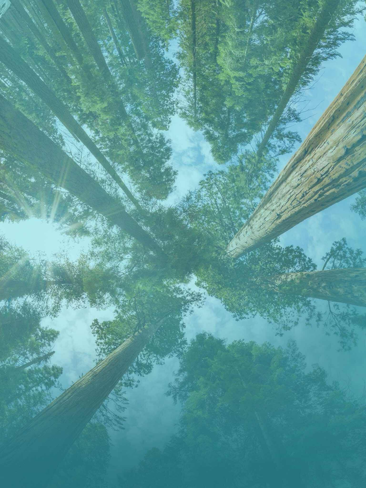
Protect natural land areas and use them carefully to keep their health and living things. Restore damaged lands and encourage practices that keep ecosystems diverse and functioning. These actions help provide clean air, water, and fertile soil for the future.
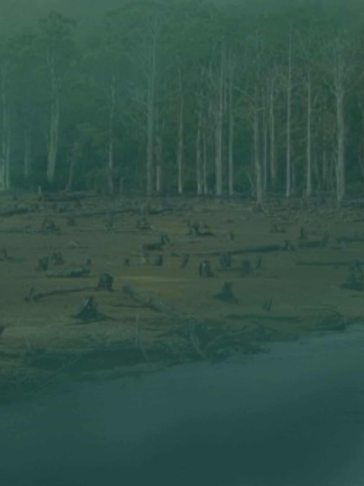
Care for forests in a way that balances the environment, people, and money. Keep plants and animals safe, prevent soil erosion, and help the climate by absorbing carbon dioxide. Good forest care also provides clean water and supports people who depend on forests.
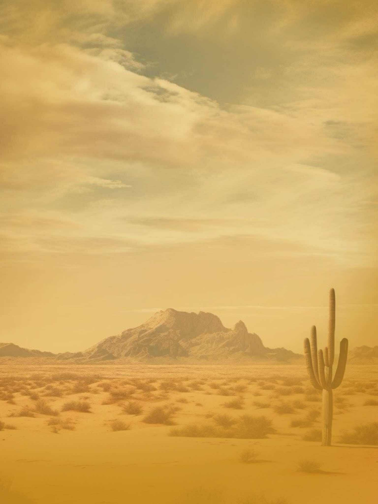
Desertification happens when land is used badly and climate problems make it worse. Fight this by replanting trees, using land wisely, and improving farming methods. These steps restore soil and protect food production and rural jobs.
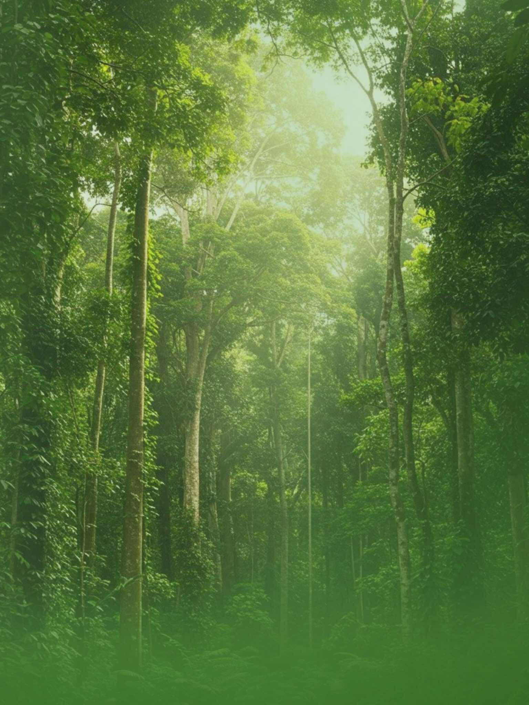
Biodiversity means all the different living things. Stop loss by protecting endangered species and their homes, and fixing damaged ecosystems. Teach people, support laws, and work with other countries to save the planet’s life variety.
Human life depends on the earth as much as the ocean for our sustenance and livelihoods. Plant life provides 80 percent of the human diet, and we rely on agriculture as an important economic resources. Forests cover 30 percent of the Earth's surface, provide vital habitats for millions of species, and important sources for clean air and water, as well as being crucial for combating climate change.
Every year, 13 million hectares of forests are lost, while the persistent degradation of drylands has led to the desertification of 3.6 billion hectares, disproportionately affecting poor communities.
While 15 percent of land is protected, biodiversity is still at risk. Nearly 7,000 species of animals and plants have been illegally traded. Wildlife trafficking not only erodes biodiversity, but creates insecurity, fuels conflict, and feeds corruption.
Urgent action must be taken to reduce the loss of natural habitats and biodiversity which are part of our common heritage and support global food and water security, climate change mitigation and adaptation, and peace and security.
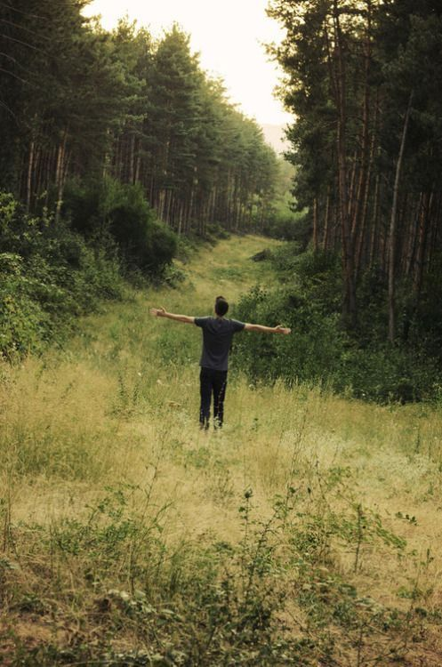
2.6 billion people depend directly on agriculture for a living
Nature based climate solutions can contribute about a third of CO2 reductions by 2030
The value of ecosystems to human livelihoods and well-being is $US125 trillion per year.
mountain regions provide 60-80 percent of the Earths fresh water.
Around 1.6 billion people depend on forest for their livelihoods
Forest are home to more than 80 percent of all terrestrial species of animals, plants and insects.
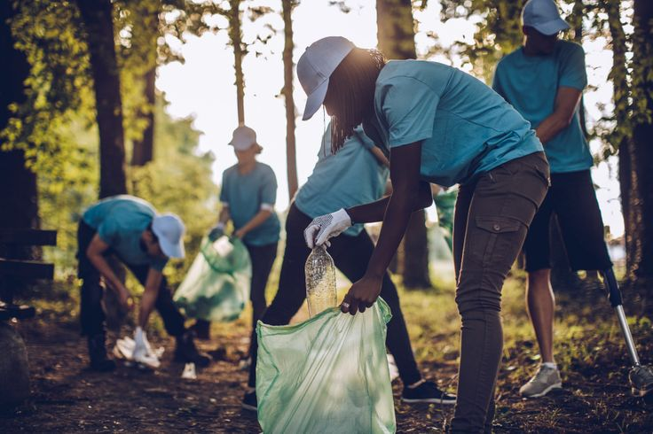
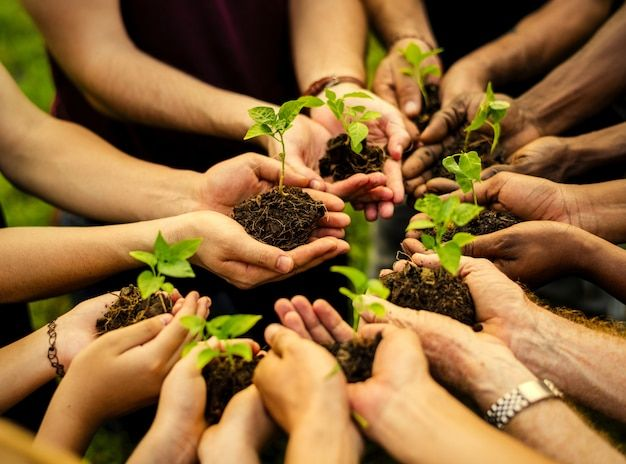
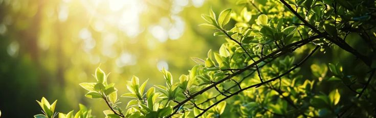
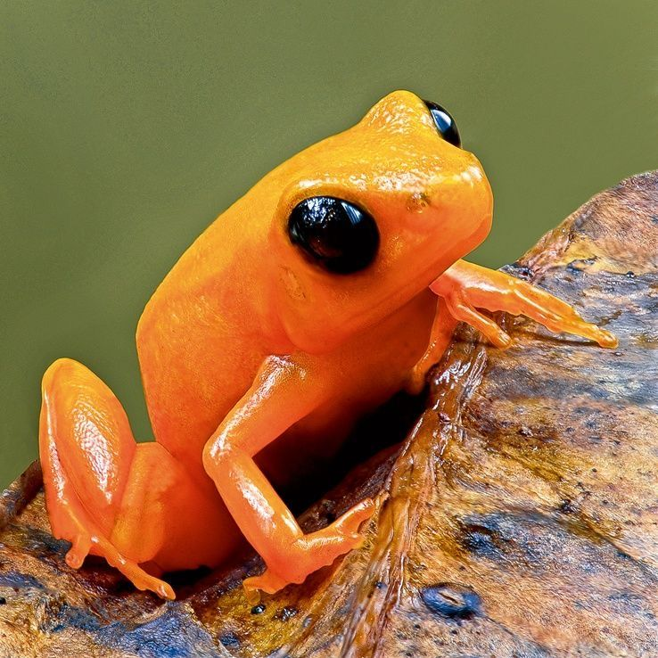
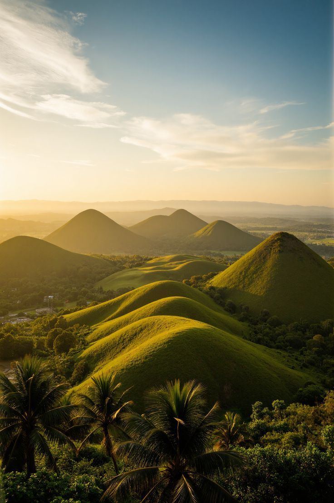
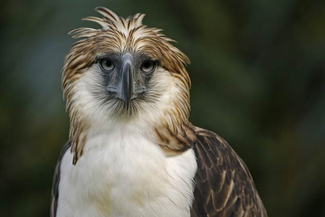
Restored habitats are creating new opportunities for wildlife to thrive, improving overall forest biodiversity. As reforestation projects expand and degraded areas gradually recover, a greater variety of plants, insects, birds, and mammals are returning to these revitalized ecosystems. The reintroduction of native vegetation helps stabilize the soil, regulate the climate, and provide essential food and shelter for countless species. In many regions, conservation efforts are not only protecting existing wildlife but also encouraging the comeback of species that were once considered rare or locally extinct. These changes contribute to healthier, more resilient forests that can better withstand environmental challenges. As communities and conservation groups continue to work together, the restored forests are becoming vibrant, dynamic landscapes—full of life, rich in diversity, and vital for the planet 's ecological balance.
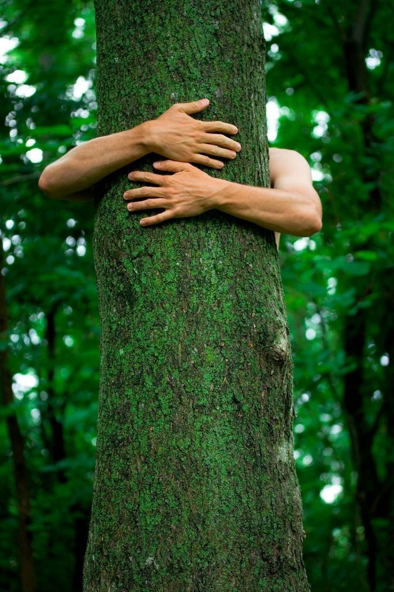
Guardian of the Forest, a place where we come together to protect and care for the Earth's vital forests. Our mission is to preserve these natural treasures, safeguard wildlife, and promote a healthy environment for future generations. By raising awareness and supporting sustainable actions, we strive to maintain the balance of nature and ensure a greener, healthier planet for everyone. Join us in becoming true guardians of the forest and protectors of our Earth.
✔ Avoid using chemical pesticides and toxic household products.
✔ Save water by turning off faucets while brushing teeth and taking shorter showers.
✔ Reuse containers and bags instead of single-use plastics.
✔ Plant trees or start a small garden to help clean the air.
✔ Reduce energy use by turning off lights and appliances when not needed.
✔ Avoid littering and pick up trash when you see it.
✔ Participate in citizen science projects that monitor wildlife or environmental health.
Taking small daily actions can make a big difference for our planet and for us.
Reduces soil, water, and air pollution, protecting plants, wildlife, and human health.
Conserves freshwater, maintains rivers and wetlands, and ensures clean water for communities.
Reduces plastic pollution, protects animals, and keeps our communities cleaner.
Improves air quality, prevents soil erosion, and provides habitat for wildlife.
Lowers greenhouse gas emissions, reduces air pollution, and decreases energy costs.
Protects animals from harmful waste and keeps our surroundings clean and safe.
Helps monitor wildlife, protects ecosystems, and encourages community involvement.
Contributing to local environmental projects preserves habitats, protects biodiversity, and strengthens communities.
Your donation helps us protect forests, wildlife, and local communities.